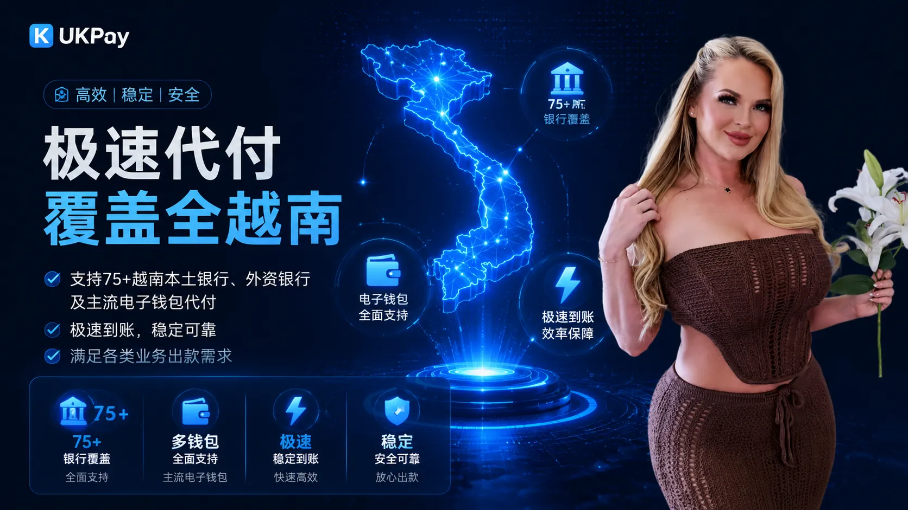
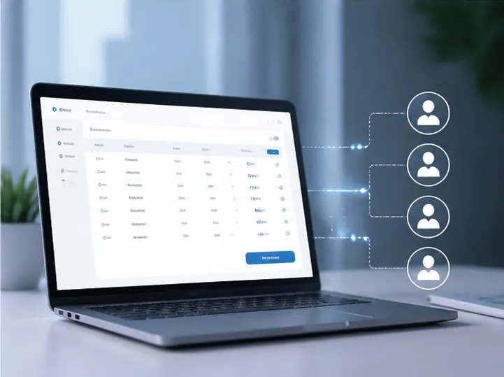

专业越南代付通道，满足企业本地付款需求
随着跨境业务、互联网平台以及数字服务行业快速发展，企业对于越南本地付款能力的需求不断增加，需要更加稳定、高效的资金处理方案。
UKPay提供专业越南代付通道服务，通过支付接口连接越南本地付款资源，帮助企业实现用户提现、批量付款、订单结算以及业务资金分发。
我们结合技术系统与本地支付能力，为企业提供自动化、标准化的越南付款解决方案，提高资金处理效率，降低人工操作成本。

越南付款通道服务能力

企业批量付款
支持批量付款需求，提高企业资金分发效率，适用于大规模业务场景。

API自动付款
提供标准支付接口，实现付款请求提交、状态查询及自动化处理。

安全风控体系
通过交易监控和风险管理机制，保障企业付款过程安全稳定。
越南代付通道应用场景
用户提现
适用于游戏平台、电商平台及互联网业务中的用户提现需求。
企业付款
支持企业向越南本地账户进行快速付款，满足业务运营需求。
业务结算
帮助企业完成订单结算、佣金分发以及业务资金管理。
越南付款通道优势
- 支持越南本地银行付款及资金转账
- 支持API接口自动化付款流程
- 适用于游戏、电商、平台等大规模业务
- 提升企业资金处理速度和运营效率
- 降低人工付款管理成本
- 提供稳定可靠的越南本地付款方案
越南代付流程
提交付款请求
系统审核处理
本地付款执行
完成资金到账

为什么选择UKPay越南代付通道？
UKPay专注于越南本地支付服务，为企业提供稳定、高效、安全的越南付款通道。
通过API接口、自动化付款系统以及本地支付资源连接，帮助企业降低资金处理难度，提高业务运营效率。
无论是用户提现、企业付款还是平台资金结算，我们均可根据业务需求提供匹配的越南代付方案。